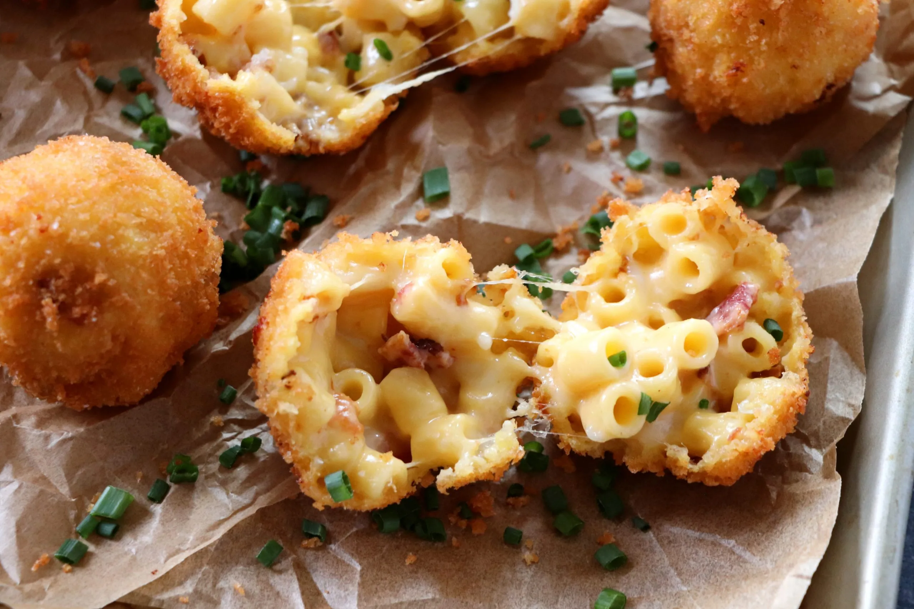

Mac and Cheese Bites filled with creamy, cheesy goodness inside. Made with the famous trio cheese combo – Mozzarella, Sharp Cheddar, and Jack, these delicious bites are even more delectable with the added kick of heat from Creole Seasoning and cayenne. Certainly, it’s a great make-ahead snack for a weekend gameday or potluck.
Meal prep time : 45 minutes
Servings : 36